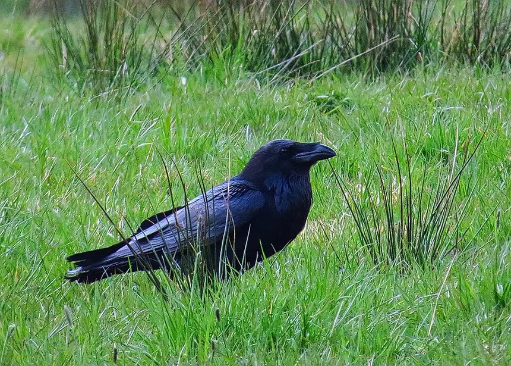

Además de ser extremadamente inteligentes, estos animales aprenden conductas humanas con facilidad, pudiendo generar vínculos afectivos y vivir en un entorno hogareño sin muchos problemas. Eso sí, su dieta es algo cara debido a lo variada que es, basándose en carne, insectos, fruta y huevo.
